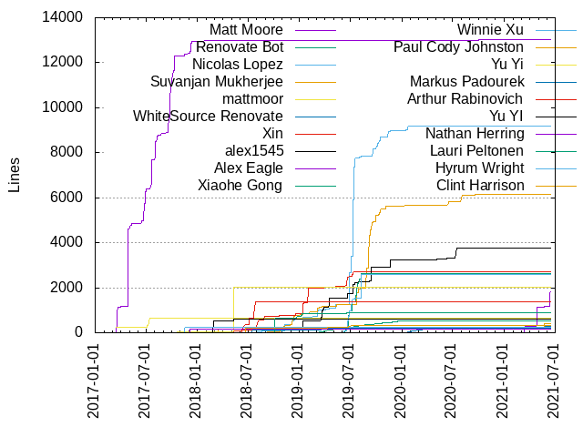
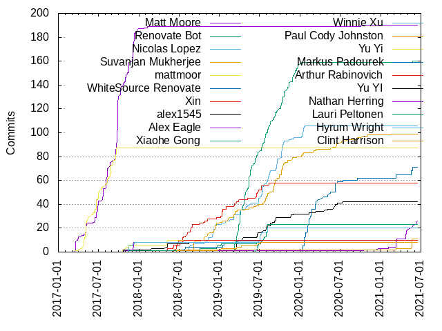
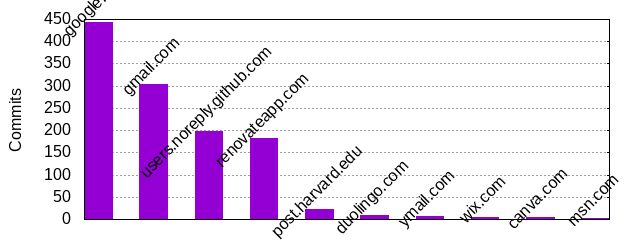

Authors
| Author |
Commits (%) |
+ lines |
- lines |
First commit |
Last commit |
Age |
Active days |
# by commits |
| Matt Moore |
190 (15.45%) |
13014 |
5031 |
2017-03-17 |
2020-10-01 |
1293 days, 15:28:34 |
85 |
1 |
| Renovate Bot |
160 (13.01%) |
533 |
528 |
2019-03-07 |
2021-05-24 |
809 days, 2:04:29 |
80 |
2 |
| Nicolas Lopez |
106 (8.62%) |
9165 |
2979 |
2018-08-01 |
2020-01-24 |
540 days, 20:47:54 |
72 |
3 |
| Suvanjan Mukherjee |
99 (8.05%) |
6156 |
4674 |
2018-09-07 |
2021-03-09 |
913 days, 23:57:14 |
77 |
4 |
| mattmoor |
87 (7.07%) |
634 |
123 |
2017-03-17 |
2017-09-20 |
187 days, 0:29:12 |
48 |
5 |
| WhiteSource Renovate |
71 (5.77%) |
267 |
264 |
2020-01-13 |
2021-05-24 |
497 days, 6:46:42 |
27 |
6 |
| Xin |
58 (4.72%) |
2695 |
1697 |
2018-03-19 |
2019-08-12 |
510 days, 15:49:56 |
48 |
7 |
| alex1545 |
42 (3.41%) |
3752 |
1386 |
2019-01-11 |
2020-07-14 |
550 days, 1:28:19 |
35 |
8 |
| Alex Eagle |
26 (2.11%) |
1805 |
1690 |
2017-12-22 |
2021-06-15 |
1271 days, 6:28:25 |
16 |
9 |
| Xiaohe Gong |
23 (1.87%) |
2640 |
596 |
2019-06-12 |
2019-08-08 |
56 days, 21:36:46 |
16 |
10 |
| Winnie Xu |
20 (1.63%) |
2609 |
248 |
2019-06-07 |
2019-08-08 |
61 days, 19:28:22 |
15 |
11 |
| Paul Cody Johnston |
11 (0.89%) |
409 |
316 |
2018-03-17 |
2021-05-23 |
1162 days, 17:31:54 |
5 |
12 |
| Yu Yi |
10 (0.81%) |
2016 |
1707 |
2017-10-18 |
2018-05-09 |
202 days, 10:27:42 |
8 |
13 |
| Markus Padourek |
10 (0.81%) |
219 |
61 |
2018-07-09 |
2019-07-16 |
371 days, 20:53:32 |
8 |
14 |
| Arthur Rabinovich |
10 (0.81%) |
1357 |
162 |
2018-06-08 |
2018-07-27 |
48 days, 17:26:33 |
8 |
15 |
| Yu YI |
8 (0.65%) |
605 |
186 |
2017-10-20 |
2018-08-17 |
300 days, 17:16:23 |
6 |
16 |
| Nathan Herring |
8 (0.65%) |
170 |
35 |
2017-10-27 |
2017-11-28 |
31 days, 19:12:28 |
7 |
17 |
| Lauri Peltonen |
8 (0.65%) |
885 |
333 |
2017-11-14 |
2019-06-17 |
580 days, 3:26:30 |
7 |
18 |
| Hyrum Wright |
8 (0.65%) |
257 |
82 |
2017-11-15 |
2017-12-05 |
20 days, 3:57:36 |
5 |
19 |
| Clint Harrison |
8 (0.65%) |
313 |
66 |
2018-06-22 |
2019-07-02 |
375 days, 4:31:02 |
8 |
20 |
These didn't make it to the top: Rodrigo Queiro, tejal29, Paweł Zuzelski,
Jeff Grafton, Daniel Sullivan, Chris Dolan, jonjohnsonjr, Laurent Le Brun,
Joshua Katz, Jake Sanders, Francois Aube, dlorenc, UebelAndre, Siddhartha
Bagaria, Or Shachar, Nick Kubala, Neri Marschik, David Schile, mjduijn,
Vladimir Moskva, Philipp Wollermann, Josh Katz, Jonathon Belotti, Chris
Eason, zoidbergwill, srajmane, ralimi, griffin dunn, Zach Barahal, Xùdōng
Yáng, Travis Cline, Peter van Zetten, Paul Tarjan, Nicholas Merritt, Misha
Seltzer, Mikhail Mazurskiy, Marcel Hlopko, Marc Plano-Lesay, Jason Hall,
Jakob Buchgraber, Fabian Wiles, Emil Kattainen, Daryl Finlay, Chanseok Oh,
Brian de Alwis, Benjamin Staffin, Alexander Faxå, Adam Liddell,
tilmangiese, tabletenniser, nowens03, ngyna, murilofv, mickeyzoox,
michaelschiff, mats cronqvist, lshamis, lewo, katre, jszroberto,
dsjiang753, dependabot[bot], davidstanke, davidmankin, chrismcbride, Yun
Peng, Yexo, Yang Hau, Walt Panfil, Wael Nasreddine, Vladimir Vladimirov,
Vincent Sisk, Viktor Barinov, Urian Chang, Uri Baghin, Umesh Kumhar,
Thulio Ferraz Assis, Ted Hahn, Sylvain Mellak, Steve Wolter, Stefan Sauer,
Shai Nagar, Sebastian Nemeth, Ryan Michael, Ryan Bourgeois, Rubens Farias,
Ross Guarino, Rodrigo Aliste, Robin Tweedie, Robbert van Ginkel, Rickard
Dybeck, RSam, Preston Van Loon, Oleg Tsarev, Niklas Bolander, Nick Revin,
Nghia Tran, Nathan Howell, Muhammad Haris, Miroslav Genov, Maxim Ermilov,
Matthew Mosesohn, Matteo Rolla, Matt Mikitka, Luc Perkins, Linus Arver,
Liam Miller-Cushon, Laurenz, Lars Almgren, Kevin Gessner, Ken Kawamoto,
Josh, Jordan M. Adler, Joost van Doorn, Jon Johnson, Jon Brandvein, Joel
Jeske, Jin, Jens Rantil, Jeff Hodges, Javier Mendiara Cañardo, James
Wilson, James Sigurdarson, Jacob Fancher, Ivo List, Henry Fuller, Hadrien
Patte, Gregg Donovan, Greg Magolan, Graham Jenson, Felix Ehrenpfort, Eytan
Kidron, Evy Bongers, Edward McFarlane, Ed Schouten, Doug Greiman, Dmitry
Lomov, Dirk Boye, David Xia, David Gageot, David Burns, DaveGay, Dave
Protasowski, Dan Halperin, Damien Martin-Guillerez, Cristian Falcas, Colin
Woodcock, Christie Wilson, Christian Ohler, Chris Hegre, Carl Byström,
Benjamin Muschko, Ben Chambers, Austin Cawley-Edwards, Andrew
Tarashkevich, Alexandru Bumbacea, Aleksandr Borisenko, Ainsley
Escorce-Jones, 0xflotus

Only top 20 authors shown

Only top 20 authors shown
| Month |
Author |
Commits (%) |
Next top 5 |
Number of authors |
| 2021-06 |
Alex Eagle |
4 (66.67% of 6) |
dependabot[bot], Sebastian Nemeth |
3 |
| 2021-05 |
Paul Cody Johnston |
8 (27.59% of 29) |
WhiteSource Renovate, Joshua Katz, Alex Eagle, Josh Katz, Viktor
Barinov
|
10 |
| 2021-04 |
Alex Eagle |
7 (50.00% of 14) |
UebelAndre, Umesh Kumhar, Paul Tarjan, Misha Seltzer, Jason Hall
|
6 |
| 2021-03 |
Alex Eagle |
7 (43.75% of 16) |
WhiteSource Renovate, Urian Chang, Suvanjan Mukherjee, Paul Tarjan,
Paul Cody Johnston
|
8 |
| 2021-02 |
Alexander Faxå |
2 (50.00% of 4) |
UebelAndre, Alex Eagle |
3 |
| 2020-12 |
jonjohnsonjr |
1 (25.00% of 4) |
Miroslav Genov, Jordan M. Adler, Alex Eagle |
4 |
| 2020-11 |
Xùdōng Yáng |
2 (18.18% of 11) |
srajmane, jonjohnsonjr, Suvanjan Mukherjee, Nghia Tran, Jason Hall
|
10 |
| 2020-10 |
srajmane |
1 (11.11% of 9) |
Wael Nasreddine, Suvanjan Mukherjee, Matt Moore, Matt Mikitka, Laurenz
|
9 |
| 2020-09 |
Francois Aube |
3 (21.43% of 14) |
WhiteSource Renovate, Suvanjan Mukherjee, lewo, griffin dunn, Yang Hau
|
10 |
| 2020-08 |
Chris Dolan |
5 (55.56% of 9) |
Suvanjan Mukherjee, Robbert van Ginkel, Francois Aube, Austin
Cawley-Edwards
|
5 |
| 2020-07 |
Suvanjan Mukherjee |
2 (33.33% of 6) |
alex1545, WhiteSource Renovate, Graham Jenson, Emil Kattainen |
5 |
| 2020-06 |
WhiteSource Renovate |
9 (45.00% of 20) |
alex1545, Suvanjan Mukherjee, tilmangiese, Or Shachar, Joel Jeske
|
6 |
| 2020-05 |
WhiteSource Renovate |
4 (28.57% of 14) |
Daniel Sullivan, Suvanjan Mukherjee, Or Shachar, alex1545, Yun Peng
|
7 |
| 2020-04 |
Daniel Sullivan |
3 (37.50% of 8) |
WhiteSource Renovate, ngyna, alex1545, Yexo |
5 |
| 2020-03 |
WhiteSource Renovate |
8 (57.14% of 14) |
Suvanjan Mukherjee, alex1545, Lars Almgren, Aleksandr Borisenko |
5 |
| 2020-02 |
WhiteSource Renovate |
20 (76.92% of 26) |
murilofv, jonjohnsonjr, alex1545, Rodrigo Queiro, Rickard Dybeck
|
7 |
| 2020-01 |
WhiteSource Renovate |
16 (37.21% of 43) |
Nicolas Lopez, Suvanjan Mukherjee, David Schile, zoidbergwill,
Renovate Bot
|
13 |
| 2019-12 |
Renovate Bot |
11 (64.71% of 17) |
griffin dunn, alex1545, Suvanjan Mukherjee, Nicolas Lopez, Jin |
7 |
| 2019-11 |
Renovate Bot |
11 (42.31% of 26) |
Suvanjan Mukherjee, ralimi, alex1545, Nicolas Lopez, mats cronqvist
|
10 |
| 2019-10 |
Renovate Bot |
15 (34.09% of 44) |
Nicolas Lopez, Suvanjan Mukherjee, lshamis, Nick Revin, Muhammad Haris
|
7 |
| 2019-09 |
Suvanjan Mukherjee |
14 (34.15% of 41) |
Renovate Bot, Nicolas Lopez, alex1545, Matthew Mosesohn, Jonathon
Belotti
|
7 |
| 2019-08 |
Renovate Bot |
11 (22.00% of 50) |
Nicolas Lopez, Xiaohe Gong, alex1545, Suvanjan Mukherjee, Winnie Xu
|
11 |
| 2019-07 |
Renovate Bot |
15 (24.19% of 62) |
Nicolas Lopez, Xiaohe Gong, Winnie Xu, Suvanjan Mukherjee, alex1545
|
13 |
| 2019-06 |
Renovate Bot |
12 (23.53% of 51) |
Winnie Xu, Xin, Xiaohe Gong, alex1545, Nicolas Lopez |
10 |
| 2019-05 |
Renovate Bot |
22 (66.67% of 33) |
Nicolas Lopez, Xin, Suvanjan Mukherjee, Marcel Hlopko, Laurent Le Brun
|
9 |
| 2019-04 |
Renovate Bot |
27 (67.50% of 40) |
Nicolas Lopez, alex1545, Xin, Suvanjan Mukherjee, Philipp Wollermann
|
8 |
| 2019-03 |
Renovate Bot |
23 (41.07% of 56) |
alex1545, Suvanjan Mukherjee, Xin, Nicolas Lopez, Markus Padourek
|
13 |
| 2019-02 |
Suvanjan Mukherjee |
3 (30.00% of 10) |
Xin, Rodrigo Aliste, Nicolas Lopez, Kevin Gessner, Brian de Alwis
|
8 |
| 2019-01 |
Xin |
8 (29.63% of 27) |
Nicolas Lopez, Markus Padourek, Suvanjan Mukherjee, Lauri Peltonen,
alex1545
|
14 |
| 2018-12 |
Nicolas Lopez |
9 (30.00% of 30) |
Suvanjan Mukherjee, Laurent Le Brun, Chris Eason, Travis Cline, Lauri
Peltonen
|
10 |
| 2018-11 |
Nicolas Lopez |
6 (35.29% of 17) |
Suvanjan Mukherjee, mjduijn, Xin, michaelschiff, Ken Kawamoto |
7 |
| 2018-10 |
Suvanjan Mukherjee |
4 (23.53% of 17) |
Xin, Lauri Peltonen, katre, Stefan Sauer, Paweł Zuzelski |
11 |
| 2018-09 |
Suvanjan Mukherjee |
9 (69.23% of 13) |
Nicolas Lopez, Mikhail Mazurskiy, Dirk Boye, David Gageot |
5 |
| 2018-08 |
Xin |
10 (52.63% of 19) |
Nicolas Lopez, nowens03, chrismcbride, Yu YI |
5 |
| 2018-07 |
Arthur Rabinovich |
5 (27.78% of 18) |
Xin, Markus Padourek, mjduijn, Vincent Sisk, Luc Perkins |
8 |
| 2018-06 |
Xin |
6 (27.27% of 22) |
Arthur Rabinovich, mickeyzoox, dsjiang753, Vladimir Moskva, Ryan
Michael
|
13 |
| 2018-05 |
Yu Yi |
4 (22.22% of 18) |
Yu YI, tejal29, Xin, Nicholas Merritt, jszroberto |
9 |
| 2018-04 |
Jake Sanders |
2 (100.00% of 2) |
|
1 |
| 2018-03 |
Paweł Zuzelski |
3 (37.50% of 8) |
davidmankin, Xin, Ted Hahn, Paul Cody Johnston, Josh |
6 |
| 2018-02 |
Philipp Wollermann |
2 (15.38% of 13) |
Jakob Buchgraber, Jake Sanders, tejal29, jonjohnsonjr, Yu YI |
10 |
| 2018-01 |
dlorenc |
1 (16.67% of 6) |
Vladimir Moskva, Rodrigo Queiro, Paweł Zuzelski, Matt Moore, Jake
Sanders
|
6 |
| 2017-12 |
Matt Moore |
24 (60.00% of 40) |
Neri Marschik, Hyrum Wright, tejal29, Nick Kubala, Matteo Rolla |
10 |
| 2017-11 |
Matt Moore |
17 (44.74% of 38) |
Nathan Herring, Hyrum Wright, Yu Yi, Nick Kubala, dlorenc |
10 |
| 2017-10 |
Matt Moore |
17 (54.84% of 31) |
Siddhartha Bagaria, Yu Yi, Yu YI, Nathan Herring, tejal29 |
8 |
| 2017-09 |
Matt Moore |
53 (76.81% of 69) |
mattmoor, Rodrigo Queiro |
3 |
| 2017-08 |
Matt Moore |
23 (57.50% of 40) |
mattmoor, Ainsley Escorce-Jones |
3 |
| 2017-07 |
Matt Moore |
10 (47.62% of 21) |
mattmoor, Vladimir Moskva, Damien Martin-Guillerez, Colin Woodcock,
Christian Ohler
|
6 |
| 2017-06 |
mattmoor |
19 (45.24% of 42) |
Matt Moore, Ross Guarino, Preston Van Loon, Doug Greiman, Chris Hegre
|
6 |
| 2017-05 |
mattmoor |
19 (55.88% of 34) |
Matt Moore, Jeff Grafton, dlorenc |
4 |
| 2017-04 |
mattmoor |
10 (83.33% of 12) |
Matt Moore |
2 |
| 2017-03 |
Matt Moore |
13 (81.25% of 16) |
mattmoor, jonjohnsonjr |
3 |
| Year |
Author |
Commits (%) |
Next top 5 |
Number of authors |
| 2021 |
Alex Eagle |
23 (33.33% of 69) |
WhiteSource Renovate, Paul Cody Johnston, Joshua Katz, UebelAndre,
Josh Katz
|
19 |
| 2020 |
WhiteSource Renovate |
62 (34.83% of 178) |
Suvanjan Mukherjee, alex1545, Nicolas Lopez, Daniel Sullivan, Chris
Dolan
|
55 |
| 2019 |
Renovate Bot |
157 (34.35% of 457) |
Nicolas Lopez, Suvanjan Mukherjee, alex1545, Xin, Xiaohe Gong |
53 |
| 2018 |
Xin |
29 (15.85% of 183) |
Suvanjan Mukherjee, Nicolas Lopez, Arthur Rabinovich, Yu YI, Paweł
Zuzelski
|
60 |
| 2017 |
Matt Moore |
187 (54.52% of 343) |
mattmoor, Nathan Herring, Hyrum Wright, Yu Yi, Siddhartha Bagaria
|
32 |
| Domains |
Total (%) |
| google.com |
443 (36.02%) |
| gmail.com |
303 (24.63%) |
| users.noreply.github.com |
199 (16.18%) |
| renovateapp.com |
183 (14.88%) |
| post.harvard.edu |
22 (1.79%) |
| duolingo.com |
8 (0.65%) |
| ymail.com |
7 (0.57%) |
| wix.com |
4 (0.33%) |
| canva.com |
4 (0.33%) |
| msn.com |
3 (0.24%) |
